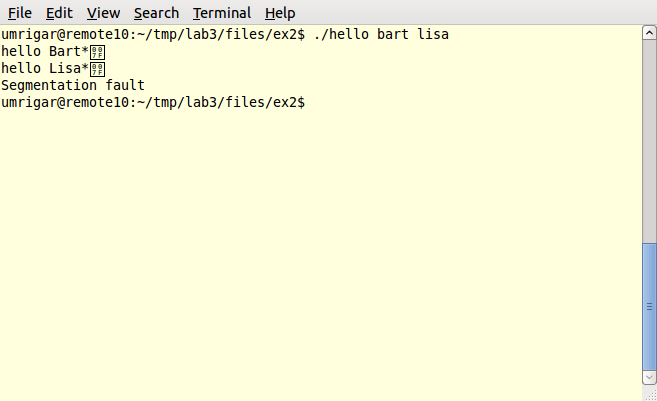

Lab 2
Date: Sep 9, 2021
This document first describes the aims of this lab. It then provides necessary background. It then describes the exercises which need to be performed.
In the listings which follow, comments are any text extending from a # character to end-of-line.
Aims
The aim of this lab is to introduce you to the use of the gdb debugger under Unix. After completing this lab, you should be familiar with the following topics:
The general capabilities of debuggers.
The basic usage of gdb.
Some ideas about typical errors in C programming.
Background
Programs break. When that happens, based on the symptoms of the problem and your understanding of the program you may proceed as follows:
Inspect the code with the symptoms in mind. You may see the problem right away.
Test the program with related inputs trying to detect a pattern in the inputs which result in a problem. If you can find such a pattern, that may often point you to the problem.
Fire up a debugger and examine the state of your program with the inputs which cause the problem. This may allow you to track down the bug.
The above assumes that the problem is reproducible. It also assumes that the bug is not a heisenbug which disappears when you attempt to track it down.
Besides tracking down bugs, debuggers also have other uses:
Validate new code by looking at it in operation using a debugger.
Attempt to understand a large code-base by tracing its operation using a debugger.
Help reverse-engineer a program for which you may not have the source code.
Finally, keep in mind this statement by Kernighan and Pike on pg. 119 of their classic book The Practice of Programming:
As personal choice, we tend not to use debuggers beyond getting a stack trace or the value of a variable or two. One reason is that it is easy to get lost in details of complicated data structures and control flow; we find stepping through a program less productive than thinking harder and adding output statements and self-checking code at critical places. Clicking over statements takes longer than scanning the output of judiciously-placed displays. It takes less time to decide where to put print statements than to single-step to the critical section of code, even assuming we know where that is. More important, debugging statements stay with the program; debugging sessions are transient.
Debugger Capabilities
Most debuggers provide the following capabilities:
The ability to set breakpoints in the program, in a particular function or on a particular line. The program will stop when execution reaches that breakpoint. The breakpoint may be unconditional with the program always stopping when the breakpoint is hit, or it may be conditional with the program only stopping if some dynamic condition is met.
The ability to singlestep the program, line by line or even by individual machine instructions.
The ability to examine data when the program is stopped. The facilities would allow the programmer to navigate complex data-structures.
The ability to set watchpoints on the state of the program. A watchpoint is a condition on the state of the program and the program will stop when the condition becomes true. Watchpoints can be a performance killer since the condition must typically be re-evaluated whenever any state change could change the condition.
All debuggers will provide at least basic breakpoints, single-stepping and ability to examine data. Using the debugger may require use of the command-line like the gdb debugger, or it may involve the use of a GUI like ddd or eclipse. Or it may be a hybrid between the command-line and full GUI like gdb running under emacs.
Exercises
When the exercises mention a new Unix command you are unfamiliar with, it is a good idea to do a man or google lookup on that command to get an idea of its capabilities.
This lab has two exercises. The first one guides you though a gdb session using extremely basic commands to debug a program. The second exercise gives you a slightly modified version of the program from the first exercise and requires you to debug it without any guidance beyond some hints.
Since the programs given are quite simple, you may easily see the bugs by inspection of the code. However, it is still a good idea to play with the debugger to confirm your diagnosis so that you achieve the aims of this lab.
Note that this lab provides you an extremely limited glimpse into gdb's capabilities. Please make sure to check-out the references or other sources on the web to get a better idea of what it can do for you.
Starting up
Follow the provided directions for starting up this lab in a new git lab2 branch and a new submit/lab2 directory. You should have copied over the contents of ~/cs220/labs/lab2/exercises over to your directory.
Exercise 1: Debugging a Simple Program
Change over to the 1-hello-args directory.
$ cd exercises/1-hello-args $ ls -l
You should see that the directory contains a C program containing several files. Read the README to see what the program is supposed to do.
Simply type make in that directory to build the program. It should compile a hello executable without any errors or warnings.
Now try to run it.
$ ./hello usage: ./hello NAME... $ ./hello bart lisa hello bart hello lisa hello (null) $
It looks like the program is almost working, but wants to greet someone called (null)! Though the problem may appear obvious, let's fire up gdb to check it out.
At the shell prompt, start gdb by typing gdb hello. It should print a greeting message followed by the prompt (gdb).
Start the program with a temporary breakpoint at the start of main by typing start bart lisa. Note that you provide your command-line arguments to the start command. (Instead of using the start command, you could similarly run the program, but that would not have a temporary breakpoint).
It should break at the start of main() printing out the current line. Type l to list the lines following the current line. Typing an empty line will simply repeat the previous command and list more lines. Type l followed by a line number to print out a listing centered (usually) at the specified line.
Let's put a breakpoint on say_hello(). Simply type b say_hello. In fact, if you press the <TAB> key after typing the prefix say of the function name, gdb should provide automatic completion.
You are still at the start of main(). You can print out the value of the arguments to main(), which are:
- argc
The number of arguments to the program, including the name of the program. So if you invoke the program as ./hello lisa bart, argc == 3.
- argv
An array with argc elements give the actual command-line arguments as C strings (declared as char *, i.e. pointer to char). So if you invoke the program as ./hello lisa bart, argv[0] will be "./hello", argv[1] will be lisa and argv[2] will be bart.
Simply type p argc to print out the value of argc. It should print as a 3; the reason it does so is that in addition to the actual arguments bart and lisa, argc also counts the name of the program. To verify this, type p argv to print out argv, but you will simply get the base address of the array. To print out the individual elements, type p argv[0], p argv[1], etc. Note that each string is printed out preceeded by a hexadecimal address giving the address of the first byte of the string.
Now let execution continue to the next line of the program by typing n (for next). Type another n, to enter the loop. Print out the value of i.
Now let execution continue to the next breakpoint by simply typing a c (for continue). The function say_hello() should be invoked and gdb will give you back control at the start of its code. Type l to print out the code.
Type p name to print out the value of the name parameter.
Type backtrace to see which calls you made to get to say_hello(); note that the backtrace contains the function names as well as their arguments.
If you try to print out the value of argc while within say_hello() you will get an error message since argc is not defined within the context of the current say_hello() function.
Type up to return one level up the call-chain back to main(). This does not run the program at all but merely changes the context of the debugger. You should once again be able to print out the value of argc, argv and i, but will no longer be able to print out the value of name which is only defined within the say_hello() context.
Print down to return back to the say_hello() context. You should be able to print out the value of name.
Let execution continue to the next breakpoint by typing the c command. The function say_hello() should be entered again with name set to lisa.
Continue again till the next breakpoint. say_hello() is now being called with a NULL pointer. That looks problematic, so do a up to look at the main() context. Print out i and argc; they are equal!! But i should always be less than argc. That should lead you to spot the obvious problem.
Quit gdb by typing q. Fix the problem, recompile and test. The script you are recording should show that you fixed the problem.
Exercise 2: Debugging a Program from Scratch
Change over to the 2-hello-upcase-args directory and type make. Another hello program should be built without any problems.
This hello program is very similar to the previous hello program except that it is slightly more complex. Before printing out each name, the program tries to make each name more human-friendly by ensuring that the first character of each alphabetical word in the name is printed in upper-case.
If the program is working properly, its output should look as follows:
$ ./hello lisa bart Hello Lisa Hello Bart $ ./hello 'lisa simpson' 'bart simpson' Hello Lisa Simpson Hello Bart Simpson $
Unfortunately, when you run the given program, it seems to work, but may print out garbage characters after each name and/or crash. YMMV depending on how your particular environment is setup; in fact, even though the program contains a bug, it may even work perfectly (which in a way is the worst possible behavior!). If you do not see incorrect behavior, try increasing the size of the names to say 16 characters or more. If you still can't see the buggy behaviour, here is a screenshot showing one buggy behavior:
Use the debugger to understand the problem and fix it.
Hints:
A C "string" is represented as an array of
charterminated by a '\0' NUL character.strlen(s) returns the number of characters in string s without accounting for the terminating '\0' character.
The fix for the problem will require making changes in two different places in the code.
The symptoms you see and the above hints should help you get to the problem quite easily.
Winding Up
Wind up your lab by using the provided directions to terminate your log in a lab2.LOG file and merging your lab2 branch into the master branch. Once you have the lab on your master branch, commit and push your changes to github. Be sure to include your lab2.LOG file as well as all the exercise directories.
References
Online gdb documentation.
Do a web search on gdb tutorial to find many tutorials.
Norman Matloff and Peter Salzman, The Art of Debugging with GDB and DDD, No Starch Press, 2008.